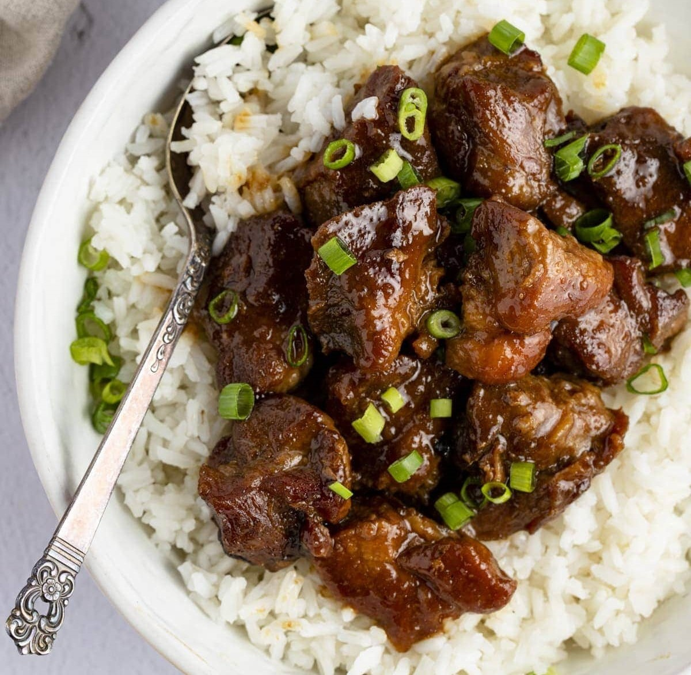

Adobo

Adobo is a very popular dish from the Phillipines. Its dish made up of typically pork or chicken marinated in
soy sauce and vinegar. I love to make this dish when I'm feeling lazy and want something low effort. There are
many variation to cooking this recipe, but the one shown here is definitely the lazy version. Other versions
marinate the meat overnight or even include sugar.
Ingredients
- 1-1.5 lbs of pork belly
- Whole peppercorns
- LOTS of garlic
- Onion
- Bay leaves
- Soy sauce
- Vinegar
Cooking Directions
- Roughly chop garlic and slice the onion.
- Add all ingredients to the pot.
- Add equal 1/2 a cup of soy sauce and vinegar. Then add enough water to cover everything in the pot.
- Bring the pot to a boil and then turn the heat down to a simmer.
- As the food cooks, check the pot occasionally to skim any scum or excess oil from the pot.
- Cook until the meat is tender or for about 30 minutes.
- The adobo is done! Serve with rice and enjoy!